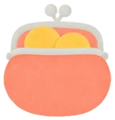

養成講座ガイド
対策講座とは？


この
試験に
対策講座って、


答え
結論：養成講習と

サニー先生養成講習は受験の
学校を
「養成講習を
更新日: 2026年10月15日 情報確認日: 2026年7月11日
広告このページに広告(紹介リンク)はありません くわしく
- 広告・PR
- なし(この
ページに 紹介リンクは 含みません。 右下の 説明会の ボタンは、 比較表の 6校の 申込み先への リンクです) - 学校からの
無償提供 - 受けていません
- 受講料
- 運営者自身が
支払っています

くわしく
養成講習とは:
厚生労働大臣が
つまり
モヤン養成講習を

サニー先生養成講習は、

ちゃん体験わたしの

くわしく
試験対策講座とは:
試験対策講座は、
運営者が
モヤン切符と、
サニー先生学校に

くわしく
養成講習と
受講料だけで
「試験対策が
サニー先生試験対策が
モヤンおかずの

くわしく
試験対策講座を
試験対策講座を
この
ちゃん体験わたしは
モヤン仲間が
サニー先生論述の

よくある
Q養成講習を
そうとは
Q試験対策講座では、
過去問の
Q試験対策講座は、
学校に
Q費用は、
「試験対策が
Q対策講座を
学科は
この
3児の